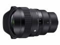

14mm F1.4 DG DN | Art是适马首支拥有14mm焦段的F1.4定焦镜头*，它诞生于我们的工程师对于捕捉宽广、明亮、高分辨率且迷人的星空的热情。得益于SIGMA适马的全新技术，该镜头将14mm 超广视角与 F1.4最大光圈结合起来。此外，SIGMA适马的镜头技术实现了高光学性能，有效抑制矢状彗形像差，同时提供专为天文摄影设计的全套功能，并采用HLA“高速线性马达”实现高速自动对焦。